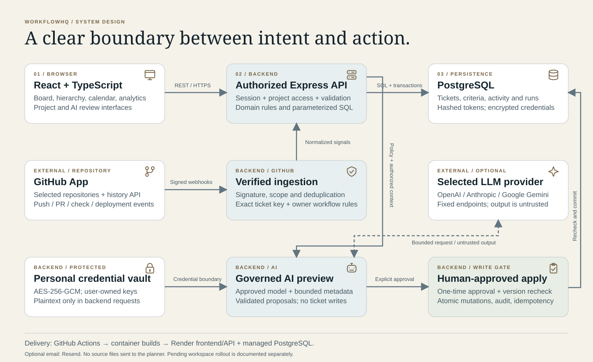
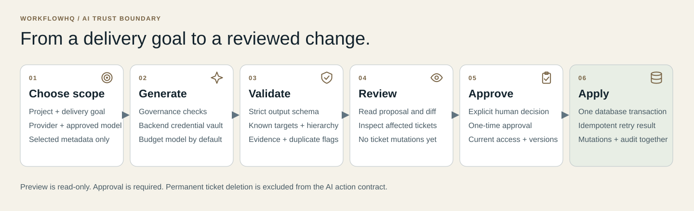
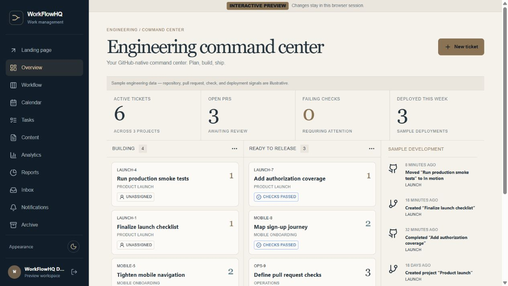
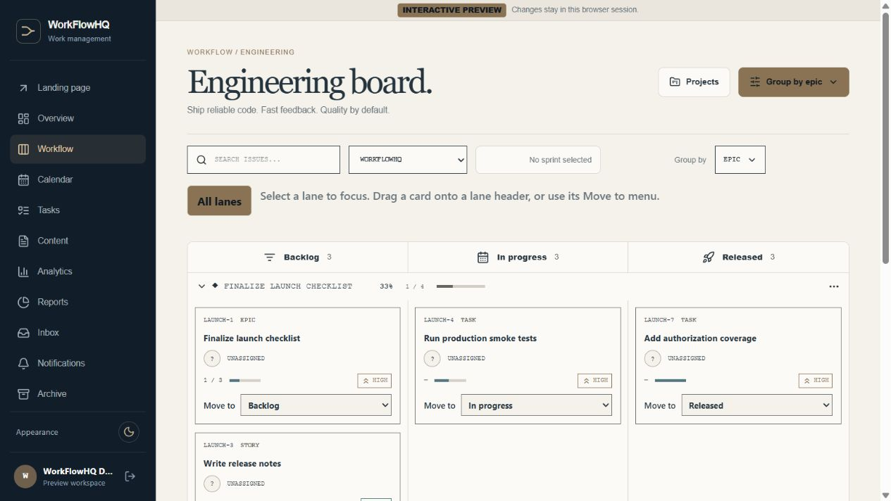
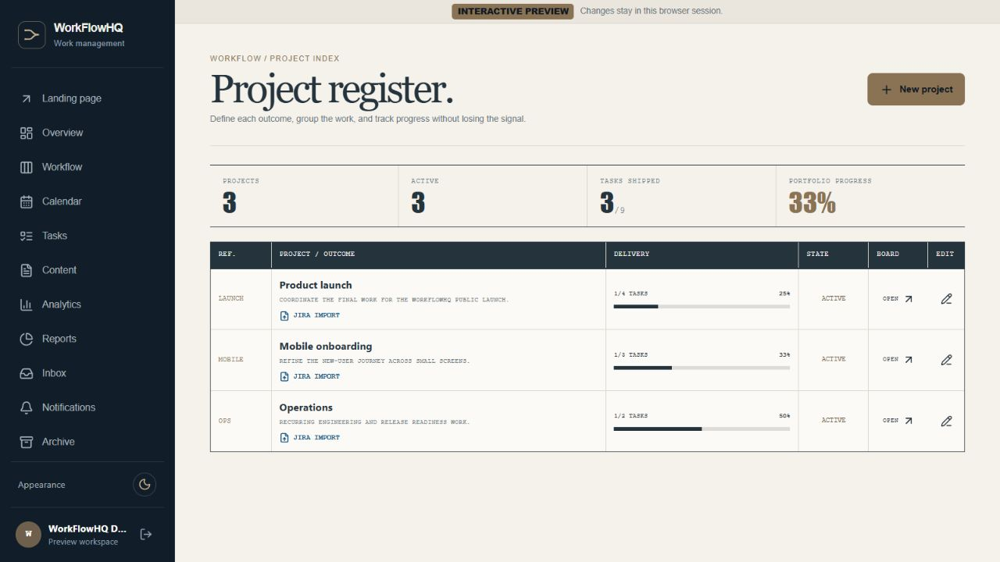
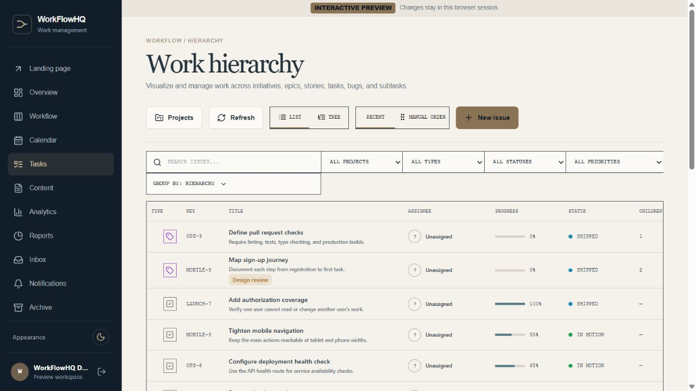
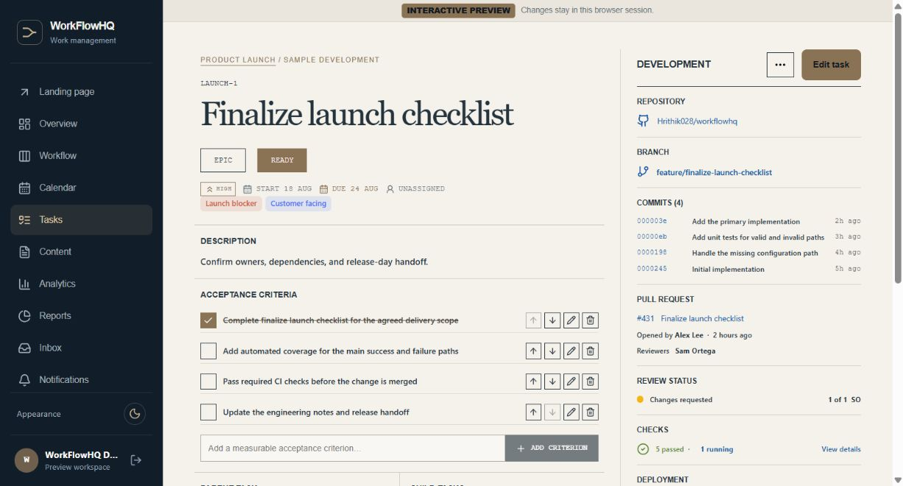
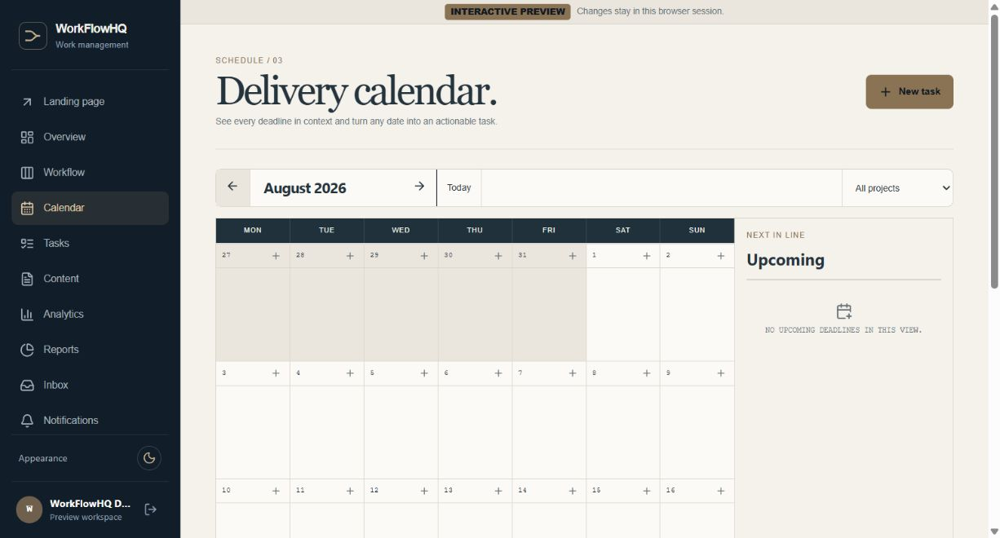
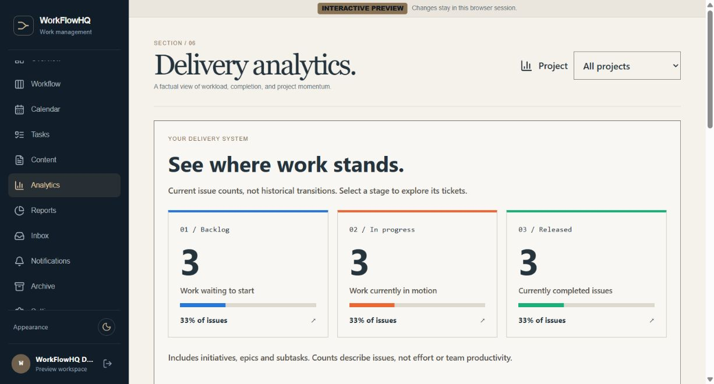
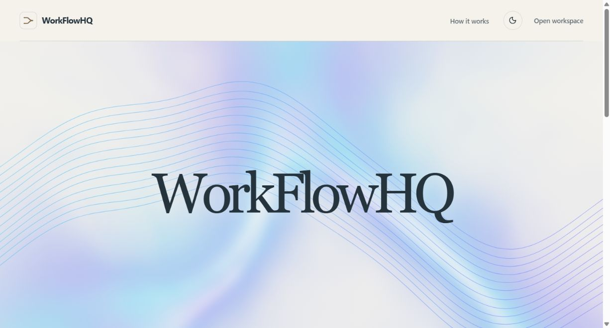

WORKFLOWHQ / LOCAL README PREVIEW
Plan the work.
Follow the code. Approve the AI.
A project workspace that connects tickets, repository evidence and human-approved AI changes.
Local preview — not published. Screens are actual captures of the session-only demo. All people, metrics and GitHub signals are sample data. The video is a captioned screenshot walkthrough, not a production screen recording.
Watch the 72-second walkthrough
Architecture

Human-approved AI

The actual interface







